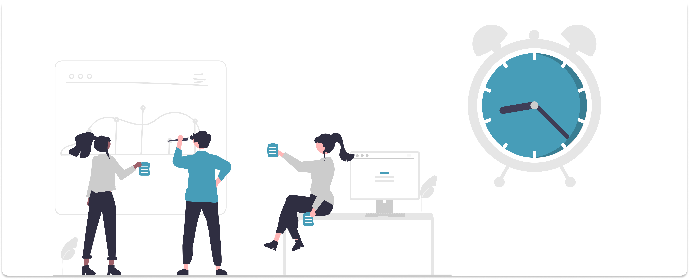
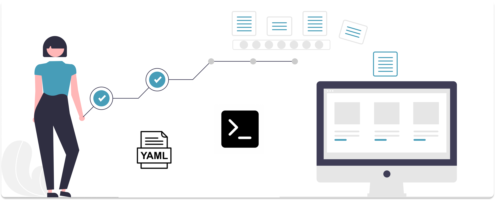

Welcome to Hygia’s documentation#
Hygia is an open source, MIT-licensed library providing high-performance, easy-to-use playground to organize, compare, register and share Machine Learning experiments on Databases developed in Python programming language.
Why Hygia?#
1. Rework#
Data Scientists often invest significant time and effort in creating experiments, developing functions, and retraining models to identify Keyboard Smash. However, this process can be hindered by replication of functions and code. Reusing code with errors can lead to unreliable results, rendering all of the processing and study done using that code invalid. Therefore, it is essential to ensure that the code being reused is thoroughly tested and validated before it is used in any further experiments or analysis.

2. Loosing time and spend money#
The data science process can become repetitive and time-consuming when working with different data from various structures. The testing and experimentation required for each new dataset can add to the repetitive nature of the work. Additionally, maintaining and evolving the generated codes can pose significant challenges, especially when the necessary processes, such as storage, versioning, and evolution, are not given the necessary attention. This can have a detrimental long-term impact on the overall data science process.
{kind=link}
3. Hygia as a solution#
Hygia offers a flexible solution for configuring your data pipeline. With it, you can customize the operations executed at each stage of the pipeline. Our current implementation includes the identification of Keyboard Smash for the Latin alphabet (also known as the Roman alphabet) through specific functions that have been integrated into the pipeline. This allows for efficient and accurate identification of Keyboard Smash in your data.
{kind=link}
The main features are:
Be able to experiment on several databases
Customize data pipeline for each database
Custom visualization
Accelerate new hythoses evaluation
Search, debug, and compare experiments, datasets, and models
Organize and display experiments and model metadata however you want
Share and collaborate on experiment results and models across the org
The Hygia library offers two options for usage: (1) Utilizing the available functions directly in your development environment, such as a Jupyter Notebook. (2) Automating processes for different databases through a customizable .yaml file. This file allows you to define your pipeline and at the end, it provides a visualization of the processed data.